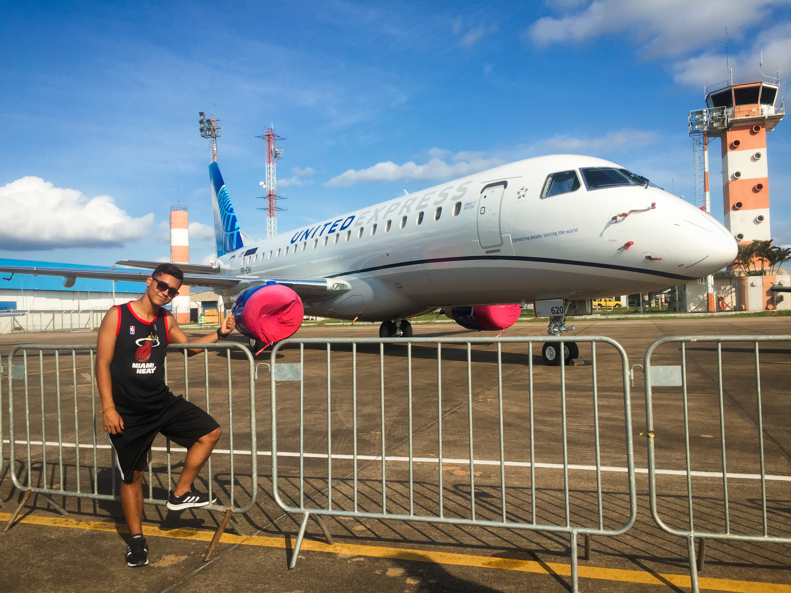

Quem somos?
A padaria turca foi fundada por Nícolas Malachias, como um site de teste para o curso de
Desenvolvimento de Sistemas do SENAI - Taubaté/SP. Entretanto, com a grande repercursão
positiva sobre o site, Nícolas pensou em dar continuidade ao site, que se transformou no Império
que hoje é. Somente aqui você encontra a revolucionária forma de pedidos de pães e derivados com
aquela pitadinha da Turquia. Veja nossas delicias no site principal.
|

Desenvolvedor